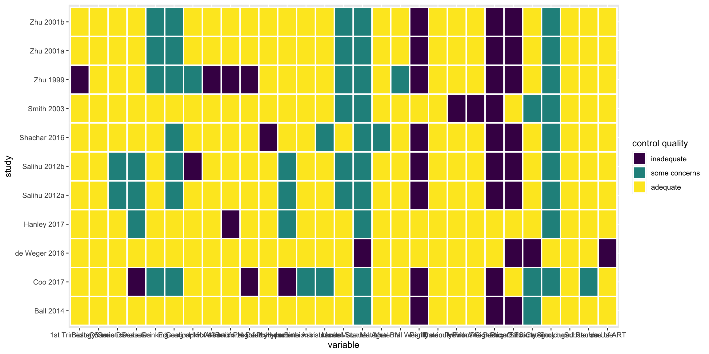
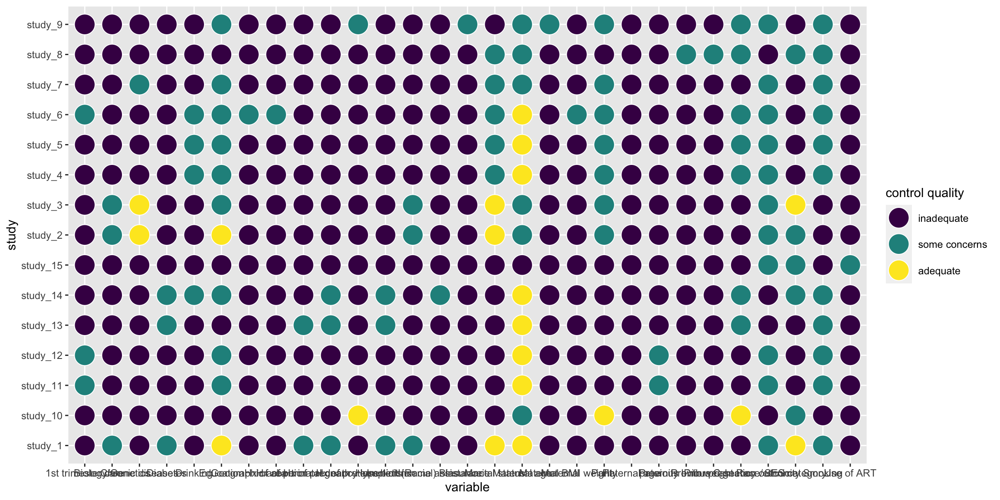
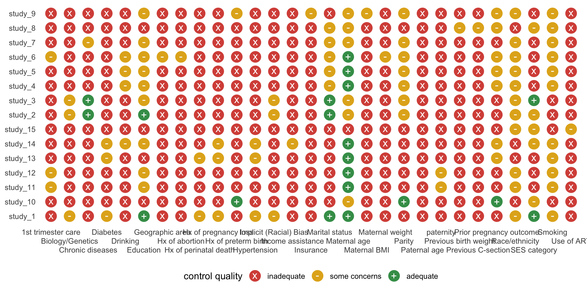
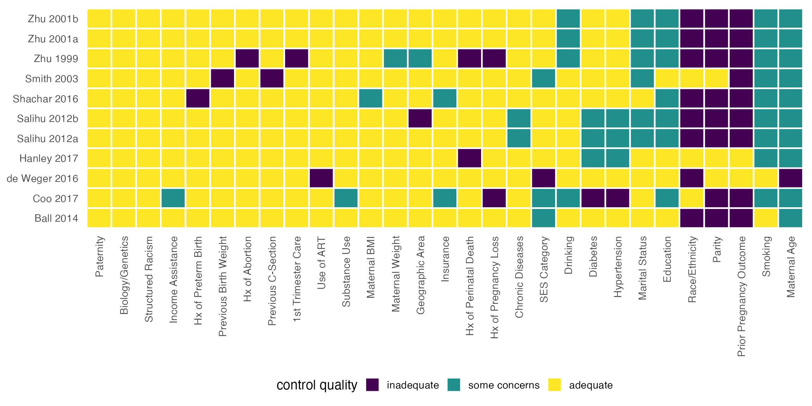
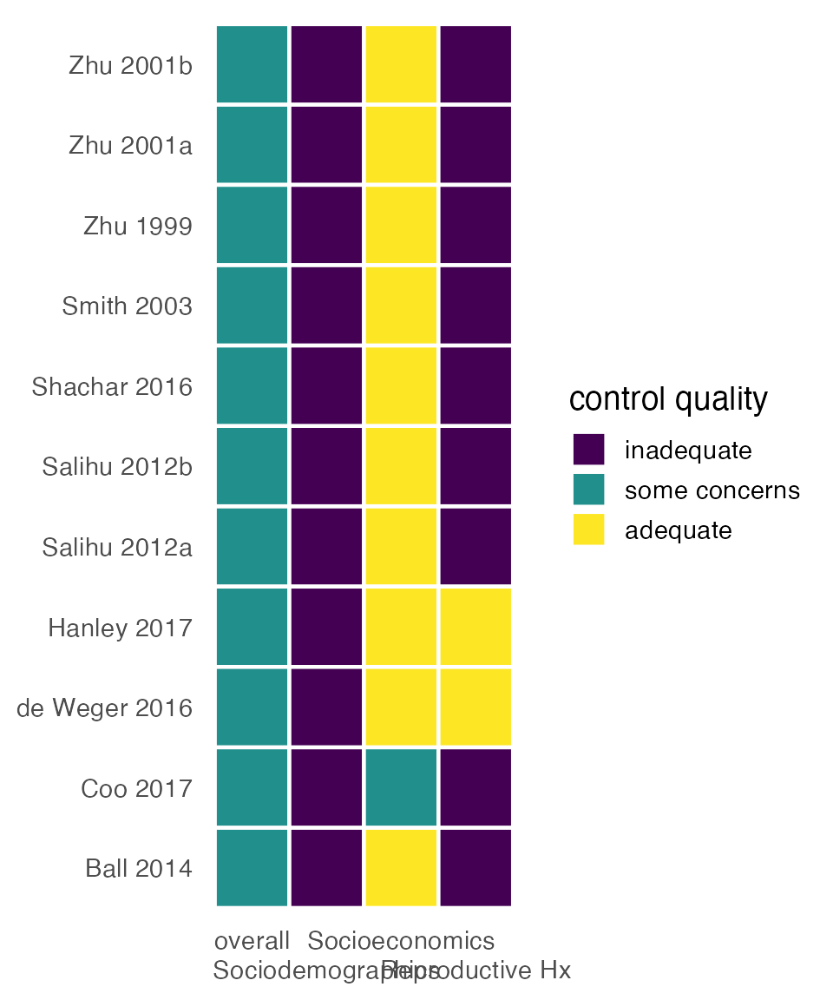
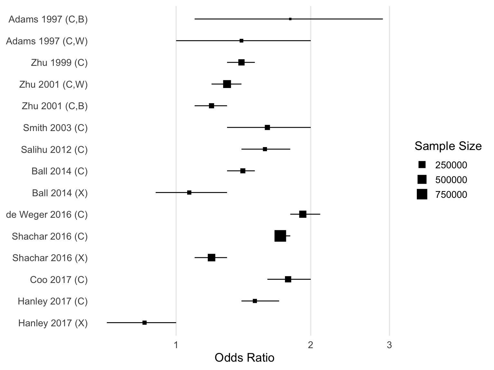
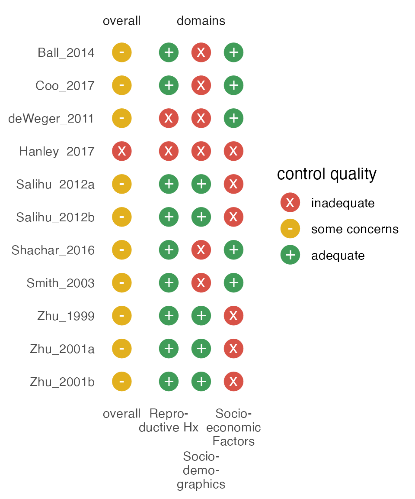
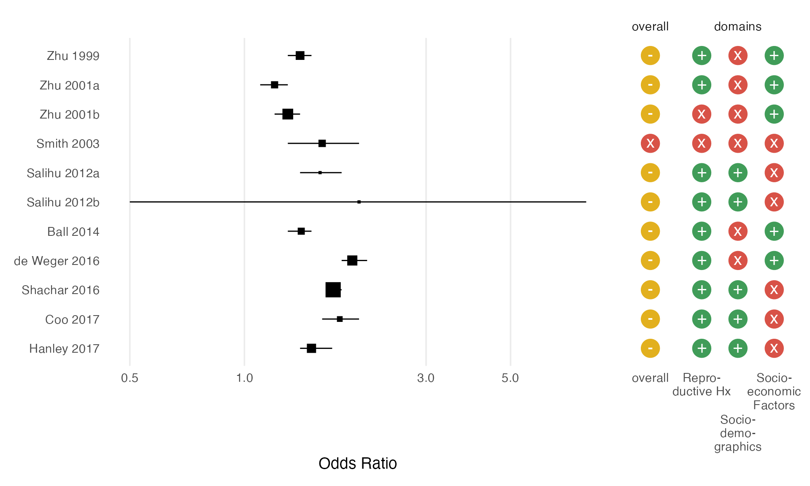
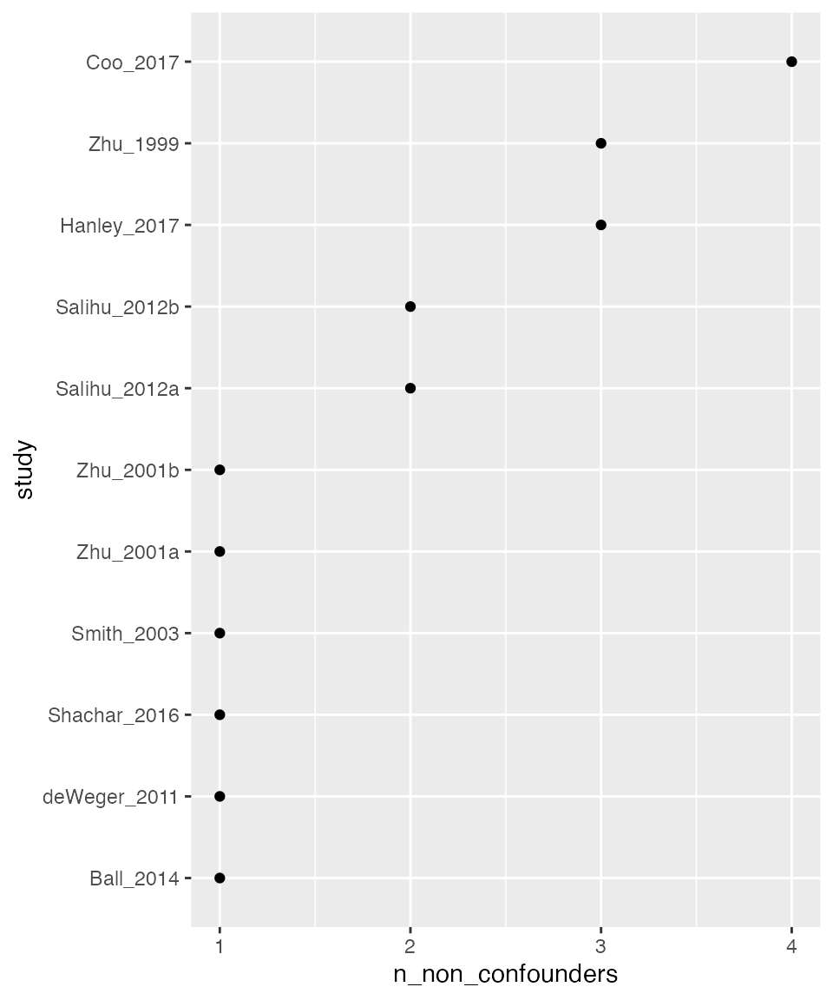

An Introduction to metaconfoundr
Source:vignettes/intro-to-metaconfoundr.Rmd
intro-to-metaconfoundr.RmdThe metaconfoundr package is a toolkit for visualizing confounding control in a set of studies included in a meta-analysis. In this approach, a set of domain experts agree on the variables required to control for confounding for a scientific question properly. Then, for a given confounder, the studies are described as being adequately controlled, inadequately controlled, or controlled with some concerns (see the vignette on evaluating studies and setting up your data). metaconfoundr visualizes these relationships using heatmaps and traffic light plots. metaconfoundr() standardizes data for use in mc_heatmap() and mc_trafficlight(). Let’s look at an example with an included data set, ipi. These data represent 14 analyses (retrospective cohorts and sibling-matched designs) to evaluate the association between short interpregnancy interval (<6 months versus 18-23 months) and risk of preterm birth (<37 weeks gestation) and the adequacy of confounder control. Using metaconfoundr() on ipi does some data wrangling to get it into a shape expected by the plotting functions:
library(metaconfoundr)
# for later examples
library(dplyr, warn.conflicts = FALSE)
library(ggplot2)
metaconfoundr(ipi)
#> # A tibble: 407 × 5
#> construct variable is_confounder study control_quality
#> <chr> <chr> <chr> <chr> <ord>
#> 1 Sociodemographics Maternal age Y Zhu_2001a adequate
#> 2 Sociodemographics Maternal age Y Zhu_2001b adequate
#> 3 Sociodemographics Maternal age Y Zhu_1999 adequate
#> 4 Sociodemographics Maternal age Y Smith_2003 adequate
#> 5 Sociodemographics Maternal age Y Shachar_2016 adequate
#> 6 Sociodemographics Maternal age Y Salihu_2012a adequate
#> 7 Sociodemographics Maternal age Y Salihu_2012b adequate
#> 8 Sociodemographics Maternal age Y Hanley_2017 adequate
#> 9 Sociodemographics Maternal age Y deWeger_2011 adequate
#> 10 Sociodemographics Maternal age Y Coo_2017 adequate
#> # … with 397 more rowsThe vignette on evaluating studies has more detail, but in brief, the goal is to create a data frame where there are five columns and a row for each confounder and study. The columns are construct, the domain to which a confounder might belong (e.g., “Sociodemographics”); variable, the name of the variable (e.g. “age”); is_confounder, an indicator if the variable is a confounder; study, the name of the study (or another unique ID); and control_quality, an indicator of the level of control for a confounder. control_quality is one of “adequate”, “some concerns”, or “inadequate”. metaconfoundr attempts to automatically detect the layout of your data, but you have full control (see ?mc_detect_layout). You can also specify the data in this format manually.
Data that you provide metaconfoundr() can be in two basic formats: a long and wide. With the long format, metaconfoundr assumes that five columns match the above layout and standardizes them. If there are more than five, metaconfoundr() treats any additional columns as studies, (e.g., they are in wide format). It will automatically transform your wide data to the format expected by metaconfoundr plotting functions. ipi has a wide cousin, ipi_wide, which metaconfoundr() can prepare seamlessly:
ipi_wide
#> # A tibble: 37 × 14
#> construct factor confo…¹ Zhu_2…² Zhu_2…³ Zhu_1…⁴ Smith…⁵ Shach…⁶ Salih…⁷
#> <chr> <chr> <chr> <dbl> <dbl> <dbl> <dbl> <dbl> <dbl>
#> 1 Sociodemograp… Mater… Y 2 2 2 2 2 2
#> 2 Sociodemograp… Race/… Y 2 2 2 0 2 2
#> 3 Sociodemograp… Marit… Y 2 2 2 2 0 2
#> 4 Sociodemograp… Pater… Y 0 0 0 0 0 0
#> 5 Sociodemograp… Geogr… Y 0 0 2 0 0 0
#> 6 Socioeconomics SES c… Y 0 0 0 2 0 0
#> 7 Socioeconomics Incom… Y 0 0 0 0 0 0
#> 8 Socioeconomics Educa… Y 2 2 2 0 2 2
#> 9 Socioeconomics Insur… Y 0 0 0 0 2 0
#> 10 Reproductive … Prior… Y 2 2 2 2 2 2
#> # … with 27 more rows, 5 more variables: Salihu_2012b <dbl>, Hanley_2017 <dbl>,
#> # deWeger_2011 <dbl>, Coo_2017 <dbl>, Ball_2014 <dbl>, and abbreviated
#> # variable names ¹confounder_y_n, ²Zhu_2001a, ³Zhu_2001b, ⁴Zhu_1999,
#> # ⁵Smith_2003, ⁶Shachar_2016, ⁷Salihu_2012a
metaconfoundr(ipi_wide)
#> # A tibble: 407 × 5
#> construct variable is_confounder study control_quality
#> <chr> <chr> <chr> <chr> <ord>
#> 1 Sociodemographics Maternal age Y Zhu_2001a adequate
#> 2 Sociodemographics Maternal age Y Zhu_2001b adequate
#> 3 Sociodemographics Maternal age Y Zhu_1999 adequate
#> 4 Sociodemographics Maternal age Y Smith_2003 adequate
#> 5 Sociodemographics Maternal age Y Shachar_2016 adequate
#> 6 Sociodemographics Maternal age Y Salihu_2012a adequate
#> 7 Sociodemographics Maternal age Y Salihu_2012b adequate
#> 8 Sociodemographics Maternal age Y Hanley_2017 adequate
#> 9 Sociodemographics Maternal age Y deWeger_2011 adequate
#> 10 Sociodemographics Maternal age Y Coo_2017 adequate
#> # … with 397 more rowsCreating plots
The primary goal of metaconfoundr is to visualize confounding control for a set of studies in a meta-analysis. The two main plotting functions are mc_heatmap() and mc_trafficlight(), which both accept data prepared by metaconfoundr().
mc_ipi <- metaconfoundr(ipi)
mc_heatmap(mc_ipi)
mc_trafficlight(mc_ipi)
Customizing plots
These results are ggplots and can thus be customized like any other plot from ggplot2.
wrap_labeller <- function(x) stringr::str_wrap(x, 10)
mc_heatmap(mc_ipi) +
facet_constructs(labeller = as_labeller(wrap_labeller)) +
theme_mc() +
theme(
axis.text.x = element_text(angle = 90, hjust = 1, vjust = .5),
strip.text = element_text(face = "bold")
)
metaconfoundr also supports adding Cochrane-like symbols and colors to plots with geoms and scales. Note that these colors are not colorblind-friendly.
mc_trafficlight(mc_ipi) +
geom_cochrane() +
scale_fill_cochrane() +
theme_mc() +
guides(x = guide_axis(n.dodge = 3)) # dodge axis text rather than rotate
It’s also possible to sort plots by how well a confounder is controlled over all the studies included. See ?score_control for more information on available algorithms by which to sort confounders.
mc_heatmap(mc_ipi, sort = TRUE) +
theme_mc() +
theme(axis.text.x = element_text(angle = 90, hjust = 1, vjust = .5),)
Summarizing confounder control
In addition to visualizing all possible confounders, metaconfoundr supports evaluating confounders at the domain level. For instance, if we feel ipi has three core areas of confounding, we can specify what variables are necessary for adequate control to account for the domain. These three domains are sociodemographics, socioeconomics, and reproductive history. We’ll say that controlling for maternal age, race/ethnicity, and marital status are sufficient to control for sociodemographics; socioeconomic status or insurance status and education are adequate for socioeconomics; and prior pregnancy outcomes are enough to control for reproductive history. We can specify these rules using boolean logic that refers to confounders in the variable column of our data:
summary_df <- summarize_control_quality(
metaconfoundr(ipi),
Sociodemographics = `Maternal age` & `Race/ethnicity` & `Marital status`,
Socioeconomics = `SES category` | Insurance & Education,
"Reproductive Hx" = `Prior pregnancy outcome`
)
summary_df
#> # A tibble: 44 × 4
#> study variable control_quality construct
#> <chr> <fct> <ord> <fct>
#> 1 Zhu_2001a overall some concerns overall
#> 2 Zhu_2001a Sociodemographics adequate domains
#> 3 Zhu_2001a Socioeconomics inadequate domains
#> 4 Zhu_2001a Reproductive Hx adequate domains
#> 5 Zhu_2001b overall some concerns overall
#> 6 Zhu_2001b Sociodemographics adequate domains
#> 7 Zhu_2001b Socioeconomics inadequate domains
#> 8 Zhu_2001b Reproductive Hx adequate domains
#> 9 Zhu_1999 overall some concerns overall
#> 10 Zhu_1999 Sociodemographics adequate domains
#> # … with 34 more rowsSummarizing control quality creates a more straightforward visualization. You can also visualize just the overall control quality of a study by using the domains = FALSE argument in summarize_control_quality().
mc_heatmap(summary_df) +
theme_mc() +
theme(legend.position = "right") +
guides(x = guide_axis(n.dodge = 2))
Combining with forest plots
Because metaconfoundr plots are ggplots, it’s easy to combine with other plots using tools from the ggplot2 ecosystem. The patchwork package makes it particularly easy, allowing you to connect plots with +. For example, let’s make a simple forest plot in ggplot2 and combine it with a metaconfoundr plot. (Alternatively, you could use a tool like tidymeta to create the forest plot.) ipi_metaanalysis contains effect sizes for the studies in ipi. We’ll also write a helper function, sort_by_year(), to help order the two plots in the same way.
sort_by_year <- function(.df) {
.df %>%
arrange(desc(year), desc(study)) %>%
mutate(study = forcats::fct_inorder(study))
}
forest_plot <- function(.df) {
.df %>%
sort_by_year() %>%
# set small weight for missing sample size
mutate(sample_size = ifelse(is.na(sample_size), 1, sample_size)) %>%
ggplot(aes(x = estimate, y = study)) +
# add effect estimates
geom_point(aes(size = sample_size), shape = 15) +
geom_errorbarh(aes(xmin = lower_ci, xmax = upper_ci), height = 0) +
# use a log10 transformed scale
scale_x_log10() +
# use a minumal scale with only vertical grid lines
theme_minimal(14) +
theme(
axis.title.y = element_blank(),
panel.grid.minor = element_blank(),
panel.grid.major.y = element_blank()
) +
labs(
x = "Odds Ratio",
size = "Sample Size"
)
}
fp <- forest_plot(ipi_metaanalysis)
fp
tl_plot <-
mc_ipi %>%
summarize_control_quality(
"Socio-\ndemo-\ngraphics" = `Maternal age` & `Race/ethnicity` & `Marital status`,
"Socio-\neconomic\nFactors" = `SES category` | Insurance & Education,
"Repro-\nductive Hx" = `Prior pregnancy outcome`
) %>%
left_join(ipi_metaanalysis, by = "study") %>%
sort_by_year() %>%
mutate(variable = stringr::str_wrap(variable, 10)) %>%
mc_trafficlight() +
geom_cochrane() +
scale_fill_cochrane() +
theme_mc() +
theme(legend.position = "right") +
guides(x = guide_axis(n.dodge = 2)) +
facet_constructs()
tl_plot
Putting the plots side-by-side is effortless with patchwork:
library(patchwork)
# forest plot
fp + theme(legend.position = "none") +
# traffic light plot
tl_plot + theme(axis.text.y = element_blank(), legend.position = "none") +
# make the FP thrice as as wide as the TLP
plot_layout(widths = c(3, 1))
Using control quality as an analytic category
Another use of metaconfoundr is to create categories for which to estimate sub-group summary effect sizes. Let’s use the metafor package to do a simple meta-analysis by whether a study is, overall, adequately controlled, inadequately controlled, or controlled with some concerns.
library(metafor)
ipi_metaanalysis %>%
left_join(summary_df %>% filter(variable == "overall"), by = "study") %>%
mutate(se = log(upper_ci) - log(estimate) / 1.96) %>%
group_by(control_quality) %>%
group_map(~rma(data = .x, yi = estimate, sei = se))
#> [[1]]
#>
#> Random-Effects Model (k = 11; tau^2 estimator: REML)
#>
#> tau^2 (estimated amount of total heterogeneity): 0 (SE = 0.0299)
#> tau (square root of estimated tau^2 value): 0
#> I^2 (total heterogeneity / total variability): 0.00%
#> H^2 (total variability / sampling variability): 1.00
#>
#> Test for Heterogeneity:
#> Q(df = 10) = 5.7452, p-val = 0.8362
#>
#> Model Results:
#>
#> estimate se zval pval ci.lb ci.ub
#> 1.4211 0.0841 16.9044 <.0001 1.2563 1.5858 ***
#>
#> ---
#> Signif. codes: 0 '***' 0.001 '**' 0.01 '*' 0.05 '.' 0.1 ' ' 1Visualizing non-confounders
Many studies control for variables that are not, in fact, confounders. While there are many cases where doing this will not affect results, there are several, such as controlling for a descendant of the exposure and outcome, that may increase bias. By default, metaconfoundr does not plot non-confounders. Instead, there is a set of tools for evaluating how many non-confounders for which a study controls. The more controlled for, the higher the chance that one is inducing bias.
ipi %>%
metaconfoundr() %>%
plot_non_confounders(geom = ggplot2::geom_point)